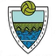

| Rank | Move | Club | Form | Last Result | Elo | Change |
|---|---|---|---|---|---|---|
| 4— | — | La Liga | LLWWW | L Real Madrid 1-2 | 1753.4-17.0 | -17.0 |
| 6— | — | La Liga | WWWWW | W Barcelona 2-1 | 1714.6+17.0 | +17.0 |
| 12▲1 | ▲1 |  La Liga | WDWWW | W Deportivo La Coruna 1-0 | 1610.1+2.9 | +2.9 |
| 28▲1 | ▲1 | La Liga | DWLWW | D Celta Vigo 0-0 | 1527.2-2.4 | -2.4 |
| 42▲3 | ▲3 | La Liga | WWLDW | W Manacor 5-0 | 1476.9+0.8 | +0.8 |
| 47▲1 | ▲1 | La Liga | WWWDW | W Levante 2-1 | 1462.0+7.7 | +7.7 |
| 62▲1 | ▲1 | La Liga | DWWLD | D Real Betis 0-0 | 1404.9+2.4 | +2.4 |
| 64▼8 | ▼8 | La Liga | WLDDW | W Recreativo Huelva 3-2 | 1402.3+2.0 | +2.0 |
| 66▲9 | ▲9 | La Liga | WWLDD | W Prat 6-1 | 1394.0+0.9 | +0.9 |
| 72▲12 | ▲12 | La Liga | WWLDL | W Hortaleza 3-0 | 1387.7+0.8 | +0.8 |
| 77▲16 | ▲16 | La Liga | WWDDW | W Pinatar 3-1 | 1378.4+0.7 | +0.7 |
| 79▼8 | ▼8 | La Liga | LDDLW | L Villarreal 1-2 | 1373.8-11.8 | -11.8 |
| 84▲1 | ▲1 | La Liga | DLLDL | D Malaga 1-1 | 1366.3-5.4 | -5.4 |
| 85▼2 | ▼2 | La Liga | LWDDL | L Real Sociedad 1-2 | 1365.1-7.7 | -7.7 |
| 99▲11 | ▲11 | Segunda División | WWWDD | W Cuarte 2-0 | 1344.9+1.3 | +1.3 |
| 110▼14 | ▼14 | La Liga | WLWLD | W Atletico Calatayud 6-0 | 1334.8+1.3 | +1.3 |
| 113▼7 | ▼7 | Segunda División | DDWDL | D Leganes 1-1 | 1331.3-6.2 | -6.2 |
| 114▲19 | ▲19 | Segunda División | WWWLD | W Conquense 3-0 | 1322.1+4.1 | +4.1 |
| 125▲4 | ▲4 | La Liga | WLDLD | W Auriense 3-0 | 1310.5+1.2 | +1.2 |
| 128▲13 | ▲13 | La Liga | WWLDL | W Ribadesella CF 2-0 | 1307.4+1.1 | +1.1 |
| 131▼9 | ▼9 | La Liga | WLLDD | W Lebrijana 3-2 | 1305.4+0.7 | +0.7 |
| 134— | — | Segunda División | WDWWW | W Castellonense 2-1 | 1301.4+1.6 | +1.6 |
| 144▼27 | ▼27 | La Liga | LLLDL | L Sestao River 3-4 | 1291.5-21.6 | -21.6 |
| 156▲2 | ▲2 | La Liga | WDLDL | W Alcazar 3-0 | 1277.0+1.5 | +1.5 |
| 160▲12 | ▲12 | Segunda División | WWWLL | W Laredo 4-2 | 1266.0+2.1 | +2.1 |
| 162▼18 | ▼18 | Segunda División | LDLWW | L Cordoba 0-2 | 1264.5-24.2 | -24.2 |
| 196▼8 | ▼8 | Segunda División | DDWWL | D Numancia 3-3 | 1235.4-9.1 | -9.1 |
| 230▲17 | ▲17 | Segunda División | WWLLD | W RSD Alcalá 3-1 | 1208.3+3.9 | +3.9 |
| 249▼19 | ▼19 | Segunda División | WLWWW | W Guijuelo 3-1 | 1198.6+3.0 | +3.0 |
| 259▲21 | ▲21 | Segunda División | WWWWW | W Cieza 3-0 | 1191.8+5.8 | +5.8 |
| 324— | — | Segunda División | DDDLD | D Sabadell 1-1 | 1151.5+1.2 | +1.2 |
| 346▼14 | ▼14 | Segunda División | WLLWD | W Varea 3-0 | 1142.9+4.7 | +4.7 |
| 386▼27 | ▼27 | Segunda División | WLWWW | W Atlético Baleares 1-0 | 1126.2+7.3 | +7.3 |
| 391▲35 | ▲35 | Primera División RFEF | WWDLW | W FC Cartagena 4-1 | 1124.3+13.2 | +13.2 |
| 394▼3 | ▼3 | Segunda División | DLWDD | D Tenerife 1-1 | 1123.3-1.2 | -1.2 |
| 401▲53 | ▲53 | Segunda División | WLLLL | W Eldense 2-0 | 1120.3+17.4 | +17.4 |
| 413▼28 | ▼28 | Segunda División | LWWLW | L Atlético Paso 1-3 | 1117.1-33.5 | -33.5 |
| 460▼16 | ▼16 | Segunda División | WLLWD | W Covadonga 1-0 | 1100.7+2.4 | +2.4 |
| 477▲18 | ▲18 | Segunda División | DLLLL | D Mallorca 1-1 | 1094.9+6.2 | +6.2 |
| 485▼21 | ▼21 | Segunda División | LDWLD | L Girona 1-5 | 1092.8-7.3 | -7.3 |
| 491▲63 | ▲63 | Primera División RFEF | WWDDW | W Tudelano 4-0 | 1091.3+9.9 | +9.9 |
| 555▼44 | ▼44 | Segunda División | WLLLD | W Poblense 2-1 | 1073.0+6.7 | +6.7 |
| 570▲93 | ▲93 | Segunda División | WWLLW | W Xerez 3-1 | 1070.6+10.0 | +10.0 |
| 588▲3 | ▲3 | Primera División RFEF | DWLDL | D Atlético Tordesillas 3-3 | 1065.2-8.2 | -8.2 |
| 610▲50 | ▲50 | Primera División RFEF | WDLWW | W Real Avilés 3-1 | 1059.6+16.0 | +16.0 |
| 613▼34 | ▼34 |  Segunda División | LLLLL | L Las Palmas 0-1 | 1059.4-6.2 | -6.2 |
| 653▲13 | ▲13 | Primera División RFEF | WDDDW | W Peña Sport 5-1 | 1047.3+8.6 | +8.6 |
| 694▲5 | ▲5 | Primera División RFEF | WLDDW | W Coruxo 2-0 | 1032.0+9.9 | +9.9 |
| 695▼86 | ▼86 | Primera División RFEF | LWWWW | L Real Unión 1-4 | 1032.0-24.2 | -24.2 |
| 732▼31 | ▼31 | Primera División RFEF | DDDLW | D Llanera 1-1 | 1022.8-8.5 | -8.5 |
| 769▼26 | ▼26 | Primera División RFEF | DLDLL | D Real Jaén 1-1 | 1017.1-4.4 | -4.4 |
| 794▼58 | ▼58 | Primera División RFEF | LWDWW | L Villarreal II 1-4 | 1010.9-13.2 | -13.2 |
| 804▲47 | ▲47 | Primera División RFEF | WDLDD | W Águilas 2-0 | 1009.1+9.6 | +9.6 |
| 808▼83 | ▼83 | Primera División RFEF | LWDWL | L Algeciras 0-2 | 1008.8-19.8 | -19.8 |
| 821▼45 | ▼45 | Primera División RFEF | WLDWL | W Gimnástica Segoviana 1-0 | 1006.2+7.7 | +7.7 |
| 829▼83 | ▼83 | Primera División RFEF | LDWLW | L Juventud Torremolinos 0-1 | 1004.5-16.0 | -16.0 |
| 835▼2 | ▼2 | Primera División RFEF | DWDWL | D Alcorcon 3-3 | 1002.4+2.2 | +2.2 |
| 838▼18 | ▼18 | Primera División RFEF | DDLWW | D Ibiza 3-3 | 1001.9-2.2 | -2.2 |
| 859▲10 | ▲10 | Primera División RFEF | DWLDD | D Ponferradina 0-0 | 995.9+3.5 | +3.5 |
| 878▼66 | ▼66 | Primera División RFEF | LWWLL | L Arosa 0-2 | 990.8-30.2 | -30.2 |
| 908▲108 | ▲108 | Primera División RFEF | WDDDL | W Lugo 4-1 | 985.3+24.2 | +24.2 |
| 950▼43 | ▼43 | Primera División RFEF | LWWWL | L Mirandes 0-2 | 974.4-11.9 | -11.9 |
| 960▼21 | ▼21 | Primera División RFEF | DWWWL | D CD Coria 0-0 | 972.6-5.4 | -5.4 |
| 961▲60 | ▲60 | Primera División RFEF | WLDLD | W Zamora 1-0 | 972.4+13.1 | +13.1 |
| 970▲94 | ▲94 | Primera División RFEF | WWLWW | W Real Madrid II 2-0 | 970.4+19.8 | +19.8 |
| 986▲208 | ▲208 | WWDWW | W Don Benito 4-2 | 966.4+11.4 | +11.4 | |
| 1029▼33 | ▼33 | Primera División RFEF | LWLDW | L Real Ávila 0-1 | 956.6-18.7 | -18.7 |
| 1033▲24 | ▲24 | Primera División RFEF | DWDDL | D Atlético Madrid II 1-1 | 955.7+4.4 | +4.4 |
| 1048▲130 | ▲130 | Segunda División RFEF | WWWWD | W Espanyol 4-3 | 953.6+21.6 | +21.6 |
| 1050▲78 | ▲78 | Primera División RFEF | WWDLL | W Hércules 4-2 | 953.3+16.6 | +16.6 |
| 1069▼17 | ▼17 | Segunda División RFEF | DLDWW | D Mijas Las Lagunas 1-1 | 947.7-4.4 | -4.4 |
| 1081▼46 | ▼46 | Primera División RFEF | LLDLW | L Unionistas de Salamanca 1-2 | 945.1-10.1 | -10.1 |
| 1110▼74 | ▼74 | Primera División RFEF | LLWDW | L Gimnastic 2-4 | 938.4-16.6 | -16.6 |
| 1116▼21 | ▼21 | Segunda División RFEF | DWDWW | D Racing Santander II 3-3 | 936.7-6.8 | -6.8 |
| 1142▼105 | ▼105 | Segunda División RFEF | LWWWW | L Olot 0-2 | 932.9-21.8 | -21.8 |
| 1172▼78 | ▼78 | Primera División RFEF | DLDLD | D Manresa 2-2 | 927.6-3.3 | -3.3 |
| 1174▲49 | ▲49 | Segunda División RFEF | WLLDW | W Gimnástica Torrelavega 3-0 | 927.4+6.7 | +6.7 |
| 1186▲9 | ▲9 | Primera División RFEF | WLLWL | W Calamocha 3-0 | 925.5+11.1 | +11.1 |
| 1223▲46 | ▲46 | Segunda División RFEF | WDWWW | W Salamanca UDS 2-1 | 919.3+7.4 | +7.4 |
| 1229▼155 | ▼155 | Primera División RFEF | LLLLW | L Extremadura 1924 0-5 | 918.0-30.9 | -30.9 |
| 1235▼90 | ▼90 | Primera División RFEF | LWWLD | L UD Logroñés 1-3 | 917.6-16.0 | -16.0 |
| 1246▼44 | ▼44 | Segunda División RFEF | LWWLW | L CD Coria 1-2 | 916.2-16.4 | -16.4 |
| 1259▲48 | ▲48 | Segunda División RFEF | LWDDD | L Rayo Vallecano 2-3 | 914.2-2.0 | -2.0 |
| 1322▲150 | ▲150 | Primera División RFEF | WWLLL | W Ciudad de Lucena 1-0 | 903.8+10.7 | +10.7 |
| 1347▲53 | ▲53 | Segunda División RFEF | LWDDW | L Eldense 0-1 | 899.6-7.3 | -7.3 |
| 1353▼83 | ▼83 | Segunda División RFEF | LDDWL | L Espanyol II 0-1 | 898.9-13.0 | -13.0 |
| 1369▲157 | ▲157 | Primera División RFEF | WDWLL | W SS Reyes 2-1 | 897.0+16.4 | +16.4 |
| 1400▲35 | ▲35 | Segunda División RFEF | WWLWL | W Coruxo 2-1 | 891.8+7.5 | +7.5 |
| 1404▲65 | ▲65 | Segunda División RFEF | WDDWW | W Bergantiños 3-2 | 890.4+9.3 | +9.3 |
| 1460▲109 | ▲109 | Segunda División RFEF | WWWLD | W Yeclano 2-0 | 882.5+12.5 | +12.5 |
| 1484▲128 | ▲128 | Primera División RFEF | WDDLL | W Real Murcia 1-0 | 879.1+16.0 | +16.0 |
| 1496▼44 | ▼44 | Segunda División RFEF | DLDDD | D Oviedo 3-3 | 876.6+9.1 | +9.1 |
| 1511▲117 | ▲117 | Primera División RFEF | WLLDL | W UD Ourense 2-0 | 875.3+14.5 | +14.5 |
| 1551▼10 | ▼10 | Primera División RFEF | DLWLD | D Águilas 1-1 | 871.6-2.2 | -2.2 |
| 1554▲110 | ▲110 | Segunda División RFEF | WDDDW | W Numancia 3-2 | 870.8+15.6 | +15.6 |
| 1559▼19 | ▼19 | Segunda División RFEF | DLWDD | D Real Valladolid II 4-4 | 870.5-3.4 | -3.4 |
| 1608▼125 | ▼125 | Segunda División RFEF | LLWWW | L Atlético Baleares 0-2 | 864.1-14.9 | -14.9 |
| 1622▲88 | ▲88 | Segunda División RFEF | LWDWL | L Castellón 0-3 | 862.7-4.1 | -4.1 |
| 1631▼55 | ▼55 | Primera División RFEF | LDLDL | L Antequera 0-2 | 862.1-9.6 | -9.6 |
| 1641▲158 | ▲158 | Segunda División RFEF | WDDWW | W Barcelona B 2-0 | 860.6+21.8 | +21.8 |
| 1648▼225 | ▼225 | Segunda División RFEF | LWWWL | L Cieza 2-4 | 859.0-27.3 | -27.3 |
| 1694▲102 | ▲102 | Segunda División RFEF | WDWWL | W Osasuna II 1-0 | 852.1+13.0 | +13.0 |
| 1722▼26 | ▼26 | Segunda División RFEF | DDWWL | D Ciudad de Lucena 2-2 | 848.0-4.6 | -4.6 |
| 1787▼67 | ▼67 | Segunda División RFEF | LWDWW | L Eibar II 2-3 | 840.2-9.3 | -9.3 |
| 1795▲24 | ▲24 | Segunda División RFEF | DWDWL | D Guadalajara 4-4 | 839.2+3.4 | +3.4 |
| 1809▼18 | ▼18 | Segunda División RFEF | DWWDL | D SD Logroñés 0-0 | 837.6-2.4 | -2.4 |
| 1837▼89 | ▼89 | Segunda División RFEF | LLWWW | L Manresa 2-3 | 833.8-13.3 | -13.3 |
| 1861▼37 | ▼37 | Segunda División RFEF | DLDDW | D Portugalete 2-2 | 830.6-5.1 | -5.1 |
| 1872▲116 | ▲116 | WLWLW | W Náxara 3-0 | 829.1+13.8 | +13.8 | |
| 1885▼2 | ▼2 | Segunda División RFEF | LWDWL | L AD Ceuta FC 1-2 | 827.9-6.7 | -6.7 |
| 1918▼48 | ▼48 | Segunda División RFEF | DLDDL | D UD Logroñés II 1-1 | 824.1-5.9 | -5.9 |
| 1962▼7 | ▼7 | Segunda División RFEF | DDWWL | D Don Benito 1-1 | 818.6-0.3 | -0.3 |
| 1972▲5 | ▲5 | Segunda División RFEF | LWLDW | L Cadiz 1-3 | 816.6-10.0 | -10.0 |
| 1989▼2 | ▼2 | Segunda División RFEF | DDWLW | D Peña Sport 1-1 | 814.0-1.4 | -1.4 |
| 1999▲14 | ▲14 | Segunda División RFEF | DDLDD | D Tudelano 1-1 | 812.9+1.5 | +1.5 |
| 2008▼59 | ▼59 | Segunda División RFEF | LDLWL | L CF Talavera 1-2 | 812.1-7.4 | -7.4 |
| 2011▲96 | ▲96 | Segunda División RFEF | WLDDL | W Las Palmas II 4-1 | 811.8+12.4 | +12.4 |
| 2031▲107 | ▲107 | Segunda División RFEF | WDLDL | W Tenerife II 2-0 | 809.1+13.4 | +13.4 |
| 2057▼79 | ▼79 | Segunda División RFEF | LDLLD | L Xerez 0-1 | 805.7-10.4 | -10.4 |
| 2087▼292 | ▼292 | Primera División RFEF | LLLWD | L Gimnástica Torrelavega 1-3 | 801.3-23.5 | -23.5 |
| 2108▲91 | ▲91 |  | WLWWW | W La Nucía 2-1 | 797.8+8.8 | +8.8 |
| 2118▲70 | ▲70 | Segunda División RFEF | DWLLL | D Deportivo Alavés II 3-3 | 796.8+6.8 | +6.8 |
| 2124▼93 | ▼93 | Segunda División RFEF | LDDDW | L Deportiva Minera 0-2 | 796.3-12.5 | -12.5 |
| 2132▲172 | ▲172 | Segunda División RFEF | LWWWD | L Granada CF 0-3 | 794.9-5.8 | -5.8 |
| 2144▲31 | ▲31 | Segunda División RFEF | DLDLD | D Atlético Astorga 1-1 | 792.6+1.1 | +1.1 |
| 2162▲24 | ▲24 | Segunda División RFEF | DLWWD | D Marino de Luanco 0-0 | 790.7+0.4 | +0.4 |
| 2167▼77 | ▼77 | Segunda División RFEF | LDDDD | L Cultural Leonesa 0-1 | 790.2-7.7 | -7.7 |
| 2193▲33 | ▲33 |  Segunda División RFEF | DLWLL | D Orihuela 1-1 | 786.8+0.7 | +0.7 |
| 2220▼79 | ▼79 | Segunda División RFEF | LDDLL | L Zaragoza 0-4 | 783.7-9.9 | -9.9 |
| 2225▲135 | ▲135 | Segunda División RFEF | DWDDW | D Sant Andreu 2-2 | 782.8+3.3 | +3.3 |
| 2271▼122 | ▼122 | Segunda División RFEF | LLWLL | L Zamora 0-2 | 776.7-9.9 | -9.9 |
| 2298▲169 | ▲169 | Segunda División RFEF | LWLWL | L Almeria 1-2 | 772.8-1.6 | -1.6 |
| 2302▼32 | ▼32 | Segunda División RFEF | LDWWW | L Rayo Majadahonda 0-1 | 772.1-10.7 | -10.7 |
| 2315▼27 | ▼27 | Segunda División RFEF | DDLDL | D Calvo Sotelo 2-2 | 771.0-5.3 | -5.3 |
| 2325▲41 | ▲41 | DWWDW | D Real Betis II 1-1 | 769.7+4.4 | +4.4 | |
| 2341▲12 | ▲12 | Segunda División RFEF | DWWDD | D Puente Genil 0-0 | 768.3+0.8 | +0.8 |
| 2353▼94 | ▼94 | Segunda División RFEF | LLDDL | L Las Palmas 1-3 | 767.2-3.9 | -3.9 |
| 2385▼6 | ▼6 | Segunda División RFEF | DLWLL | D Gernika 1-1 | 762.6-1.1 | -1.1 |
| 2398▲126 | ▲126 | Segunda División RFEF | WWWLL | W Llanera 3-1 | 761.2+19.8 | +19.8 |
| 2415▲361 | ▲361 | Segunda División RFEF | WWDLW | W Cordoba 3-1 | 757.6+33.5 | +33.5 |
| 2444▲90 | ▲90 |  | DDWDW | D Mirandes 3-3 | 752.4+8.2 | +8.2 |
| 2449▼85 | ▼85 | Segunda División RFEF | LDDWW | L Albacete II 1-2 | 752.2-13.2 | -13.2 |
| 2477▲40 | ▲40 | Segunda División RFEF | DDWLL | D Basconia 2-2 | 747.5+5.1 | +5.1 |
| 2478▲10 | ▲10 | Segunda División RFEF | DWLLL | D Valencia II 1-1 | 747.3-0.7 | -0.7 |
| 2480▲189 | ▲189 | Segunda División RFEF | WLWDD | W Pontevedra 2-0 | 747.1+30.2 | +30.2 |
| 2481▼151 | ▼151 | Segunda División RFEF | LLDWD | L Castellonense 0-2 | 747.0-22.8 | -22.8 |
| 2490▼4 | ▼4 | Segunda División RFEF | WLLDL | W Unionistas de Salamanca 1-0 | 745.9+18.7 | +18.7 |
| 2504▲10 | ▲10 | Segunda División RFEF | DLLWL | D Real Oviedo II 0-0 | 743.0-0.4 | -0.4 |
| 2528▼59 | ▼59 | Segunda División RFEF | LDWLL | L Extremadura 1924 2-4 | 740.4-11.4 | -11.4 |
| 2537▼80 | ▼80 | Segunda División RFEF | LDWLW | L Real Murcia II 2-3 | 739.3-13.0 | -13.0 |
| 2540▼79 | ▼79 | Segunda División RFEF | LLDLW | L Sevilla Atletico 0-2 | 738.6-13.4 | -13.4 |
| 2578▼51 | ▼51 | Segunda División RFEF | LLLWW | L Castellón II 1-2 | 732.2-8.8 | -8.8 |
| 2595▲7 | ▲7 | Segunda División RFEF | DWWLD | D Badajoz 0-0 | 730.0-0.8 | -0.8 |
| 2628▼87 | ▼87 |  Segunda División RFEF | LDWDL | L Girona II 0-3 | 725.7-13.8 | -13.8 |
| 2637▼147 | ▼147 | Segunda División RFEF | LWLLW | L Mallorca II 0-4 | 724.8-22.8 | -22.8 |
| 2646▼75 | ▼75 | Segunda División RFEF | LDLLL | L Recreativo Huelva 0-5 | 723.5-10.5 | -10.5 |
| 2662▲140 | ▲140 | Segunda División RFEF | WLDLL | W Elche II 4-0 | 721.1+22.8 | +22.8 |
| 2664▼106 | ▼106 |  Segunda División RFEF | LDDDL | L Conquense 0-2 | 720.4-15.7 | -15.7 |
| 2682▲46 | ▲46 | Segunda División RFEF | DLWLW | D Utebo 1-1 | 717.5+5.9 | +5.9 |
| 2699▲25 | ▲25 | Segunda División RFEF | DDLLL | D Terrassa 0-0 | 715.2+2.4 | +2.4 |
| 2721▼35 | ▼35 | Segunda División RFEF | LDDLW | L Huesca 1-5 | 711.5-8.6 | -8.6 |
| 2735▲66 | ▲66 | Segunda División RFEF | WLLLW | W Tamaraceite 1-0 | 708.7+10.0 | +10.0 |
| 2793▲100 | ▲100 | Segunda División RFEF | WLLDL | W UD Ourense 3-1 | 700.1+23.5 | +23.5 |
| 2794▲78 | ▲78 | Segunda División RFEF | WDLLD | W A Madrid III 2-1 | 700.0+13.2 | +13.2 |
| 2824▲80 | ▲80 |  | WDLWL | W Lorca Deportiva 3-2 | 692.9+13.0 | +13.0 |
| 2836▼57 | ▼57 | Segunda División RFEF | DLLWD | D Ponferradina 1-1 | 691.2+8.5 | +8.5 |
| 2881▼70 | ▼70 | Segunda División RFEF | LLDLD | L Sanluqueño 1-4 | 684.6-12.4 | -12.4 |
| 2887▲24 | ▲24 | Segunda División RFEF | DLDLW | D Getafe II 2-2 | 683.1+5.3 | +5.3 |
| 2904▼41 | ▼41 | Segunda División RFEF | LWLWL | L Atlético Central 0-1 | 678.1-10.0 | -10.0 |
| 2917▼21 | ▼21 | Segunda División RFEF | LLWLL | L Poblense 0-1 | 675.4-5.8 | -5.8 |
| 3003▼8 | ▼8 | Segunda División RFEF | DDDLL | D Calamocha 1-1 | 658.9-1.9 | -1.9 |
| 3007▼39 | ▼39 | LDDLL | L Europa Fc 0-3 | 657.3-11.1 | -11.1 |